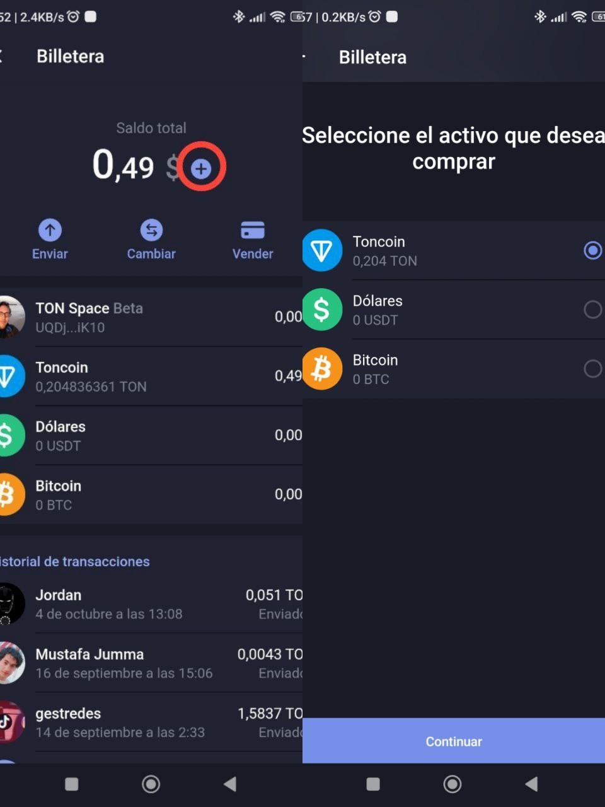
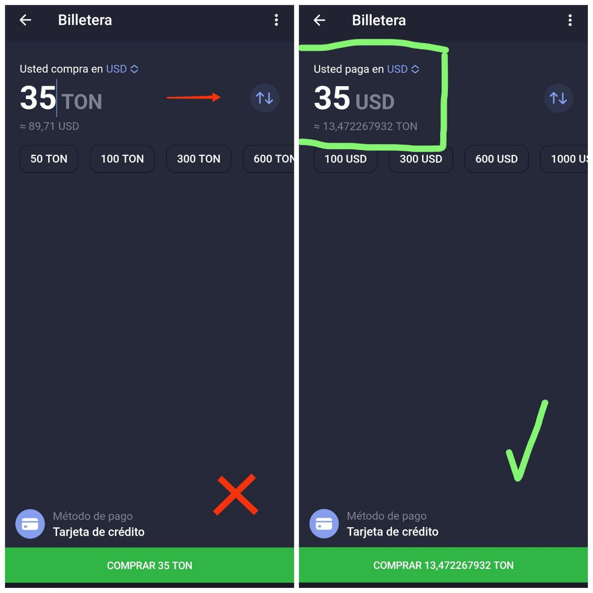
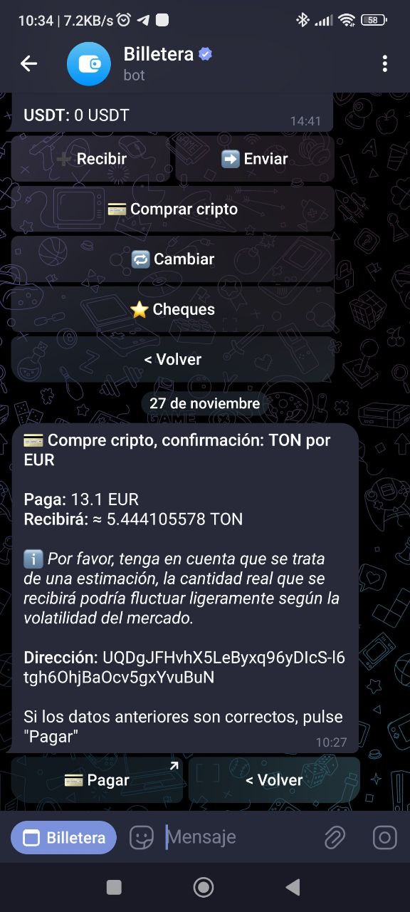
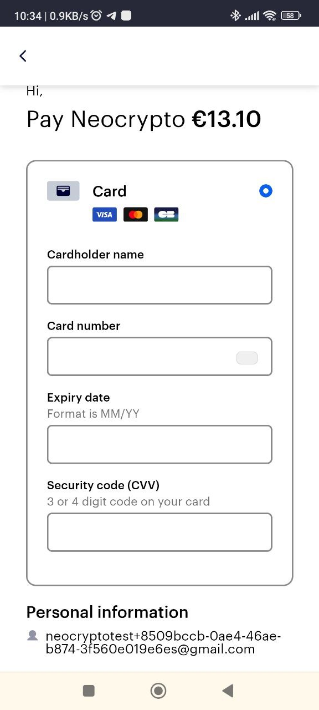
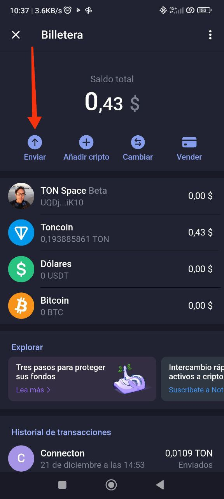
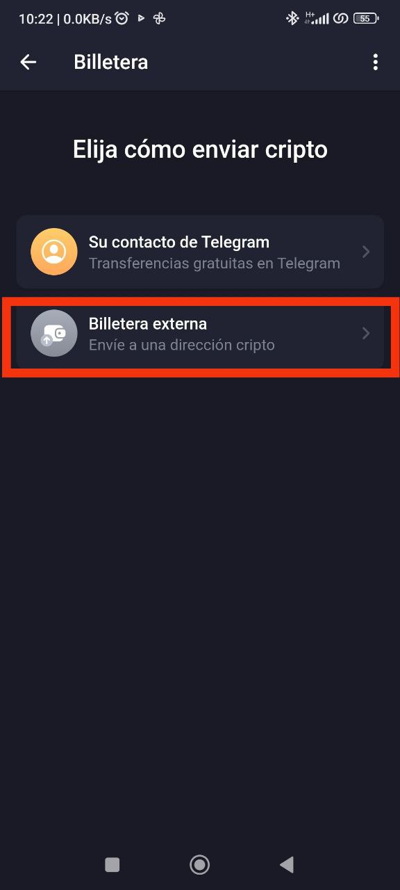
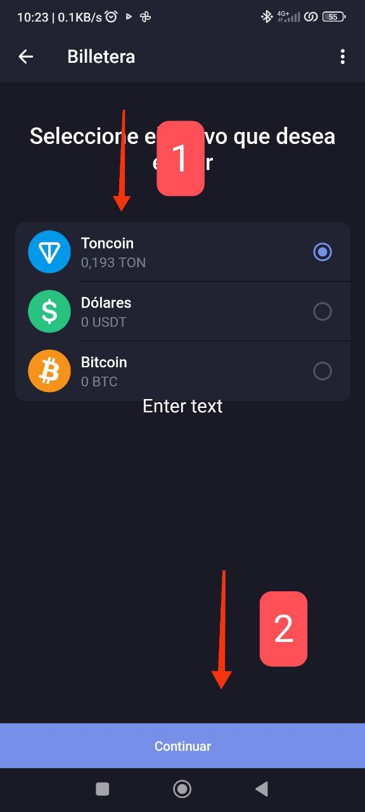
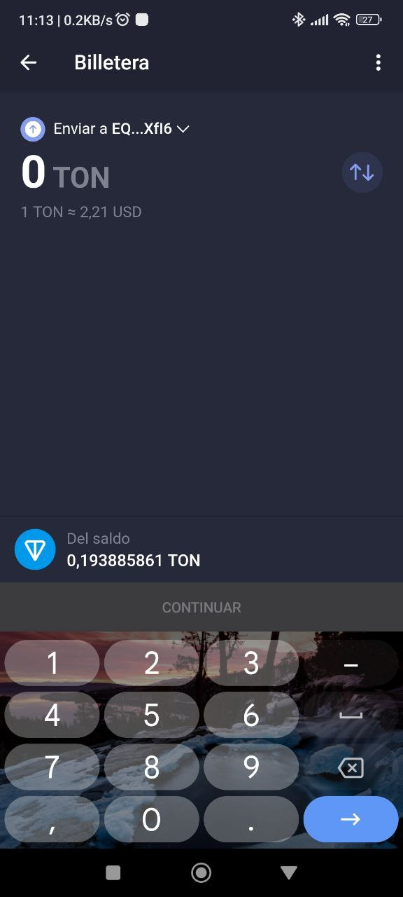

Cómo enviar remesas a Cuba desde Telegram
Creado por: Brian Domínguez
Ult. edición: 11/01/2024
En este artículo te enseño cómo enviar dinero a Cuba tanto en MLC como en CUP de una manera sencilla y sin salir del Telegram
Antes de empezar
ATENCIÓN: el bot de wallet fue bloqueado en Cuba recientemente por lo que los usuarios que estén registrados con un número de teléfono en Cuba serán bloqueados
Cabe hacer algunas aclaraciones este servicio está disponible para casi cualquier parte del mundo donde funcione Wallet no funciona en Estados Unidos además usamos el servicio de gestredes que es un servicio de terceros ante cualquier duda o para ver las tarifas actuales preguntar en el grupo de soporte Venta Digital dicho esto comencemos
Recargando la billetera @Wallet
Para empezar explicamos un poco que es wallet, es una billetera de criptomonedas integrada en Telegram custodiada y dentro también tiene una de autocustodia denominada TON Space y lo que vamos a hacer ahora es recargarla con nuestra tarjeta de crédito o débito también cabe destacar que hay un P2P pero solo esta disponible en algunos países de momento así que usemos nuestras tarjetas
Para empezar asegúrese de tener instalado Telegram y tener una cuenta registrada luego abrimos @Wallety le damos al botón de iniciar y le compartimos nuestro número de teléfono, una vez hecho esto debemos recargarla
Estando en la pantalla de inicio tocamos el botón de añadir y la opcion de tarjeta bancaria y seleccionamos la opción Toncoin; luego lo que vamos a hacer es elegir con cuánto dinero vamos a recargar nuestra billetera
En este paso fíjese bien en la cantidad de dinero en USD (u otra moneda que vaya a utilizar) porque los valores de 1 TON y 1 USD no son equivalentes. Nótese que en el botón señalado en la foto puedes hacer que los dos valores estén en USD para evitar tantas complicaciones con los números
Usted puede usar la moneda que desee sea TON USDT o BITCOIN yo recomiendo el uso de TON porque las transacciones son instantáneas y los fees son más bajos con respecto a las otras dos pero queda a su discresión cual desee usar
Una vez elegido la cantidad en USD procedemos a comprar nuestros Toncoins tocando en el botón verde que dice comprar Toncoins y darle al botón de pagar, el mínimo que puede comprar depende del país donde se encuentre y la moneda que vaya a utilizar pero ronda sobre los 15 USD
Una vez que le das al botón pagar te sale una pantalla como la siguiente donde vas a tener que rellenar los datos de la tarjeta como en todos los formularios online, la pasarela de pago se llama Neocrypto. No hay necesidad de hacer KYC tremendo punto a nuestro favor porque no hay necesidad de dar nuestro documento hasta llegar a un tope máximo de 300 Euros por día y 5000 por mes
Enviando a Cuba
Una vez cargados los fondos en la billetera deberás comunicarte con Gestredes a quien le vas a enviar el número de la tarjeta de MLC en Cuba o CUP o el número de móvil para recargar en Cuba y ahora te enseño cómo hacerlo
Una vez estando en el chat del bot de wallet debes tocar en el menú de enviar
Seleccionar la opcion billetera externa
Seleccionar la criptomoneda a enviar (yo siempre recomiendo toncoin porque tiene menos fees a la hora de extraer y las transacciones son más rápidas)
 Usted debe buscar la dirección de la billetera a la que va a enviar los fondos en este enlace
Debe tener en cuenta siempre seleccionar correctamente a la red a la que va a enviar los fondos por ejemplo usted no puede enviar usdt trc20 a una red de toncoin o usdt ton porque perderá los fondos solo puede enviarlo a otra red trc20.
Poner el monto a enviar y luego dar a continuar, para ver las tarifas actuales primero diríjase al grupo
Y listo eso es todo el proceso luego queda esperar a que la empresa haga la remesa que por lo general toma 10min